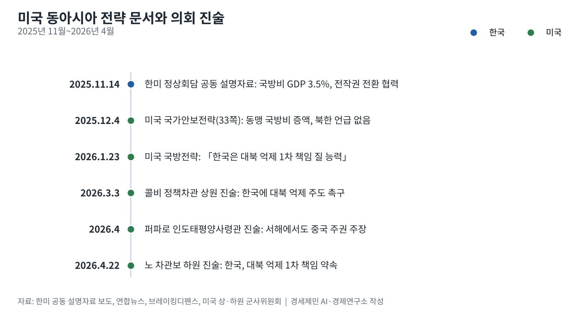
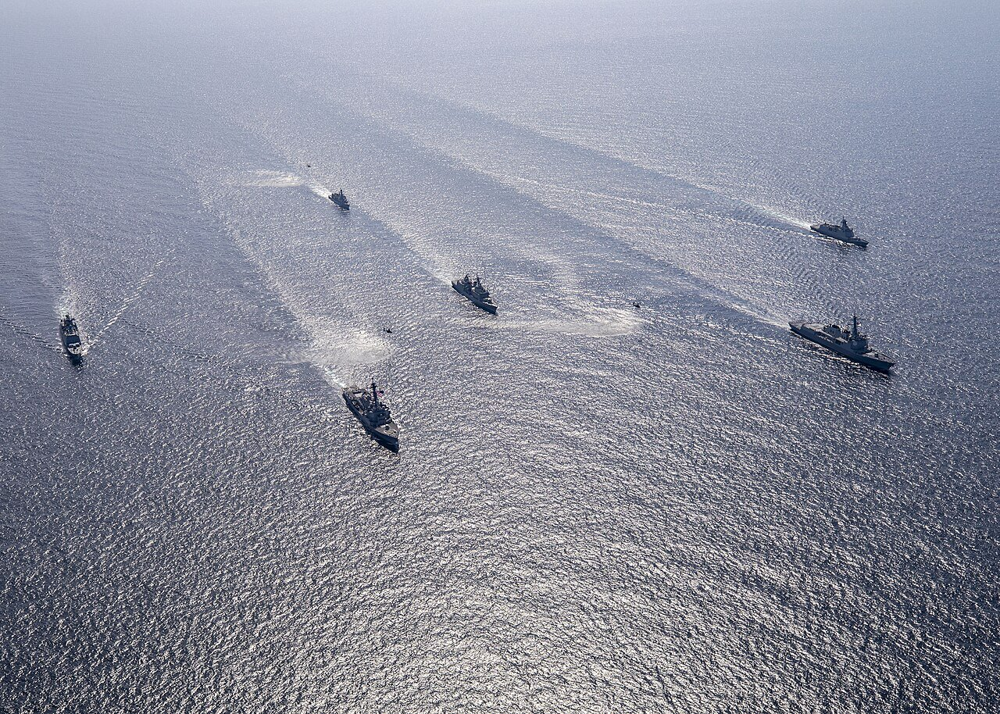
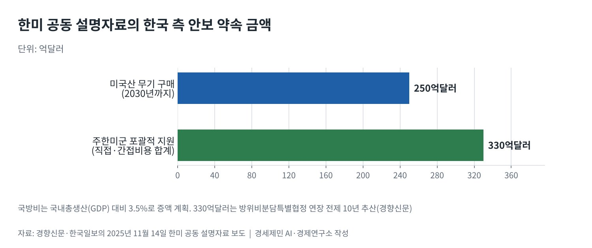

[서해평화 가능한가⑥] 미국의 동아시아 전략, 동맹 강화와 대중 압박
미국 국방전략 「한국은 대북 억제의 1차 책임을 질 능력」, 미국 지원은 「더 제한적」
국가안보전략은 북한 비핵화를 빼고 동맹의 국방비 증액을 요구
한미 공동 설명자료, 국방비 국내총생산 3.5%·미국산 무기 250억달러·주한미군 지원 330억달러
AI경제저널=김갑봉 기자 | 미국이 동아시아 전략의 문서를 새로 썼다. 백악관은 2025년 12월 4일 33쪽짜리 국가안보전략(NSS)을, 국방부는 2026년 1월 23일 국방전략(NDS)을 냈다. 두 문서는 중국 억제를 앞세우고 동맹에 짐을 나누라고 한다.
한반도에 주는 메시지는 분명하다. 국방전략은 「한국은 북한 억제의 1차 책임을 질 능력이 있다」고 적었다. 미국의 지원은 「핵심적이지만 더 제한적」일 것이라고 했다. 대북 억제의 무게중심이 서울로 옮겨 간다.
서해는 이 재편의 접점에 있다. 북한과 맞선 바다이자 중국 해군이 드나드는 바다다. 미국 전략 문서와 의회 진술, 한미 합의 원문으로 서해가 놓인 자리를 짚는다.
「아틀라스의 시대는 끝났다」
연합뉴스가 전한 국가안보전략은 미국이 아틀라스처럼 세계 질서를 떠받치던 시대는 끝났다고 선언했다. 동맹은 국내총생산(GDP) 대비 국방비를 「훨씬 더」 써야 한다고 했다. 한국과 일본을 함께 거론했다.
문서는 일본·대만·필리핀 북부를 잇는 제1도련선 방어에서 동맹이 더 쓰고 더 하라고 요구했다. 대만해협의 일방적 현상 변경에 반대한다는 기존 입장도 유지했다. 북한과 비핵화는 한 번도 언급하지 않았다.
2017년 국가안보전략은 한반도의 완전하고 검증 가능하며 되돌릴 수 없는 비핵화를 요구했다. 2022년판도 비핵화 진전을 목표로 적었다. 이번에는 그 단어가 미국 최상위 안보 문서에서 빠졌다.
국방전략의 순서, 본토와 제1도련선
브레이킹디펜스가 정리한 2026년 국방전략의 우선순위는 넷이다. 서반구를 포함한 본토 방어가 첫째다. 둘째는 인도태평양에서 「대결이 아닌 힘으로」 중국을 억제하는 일이다. 동맹 분담 확대와 방위산업 강화가 뒤를 잇는다.
중국에 대해서는 제1도련선을 따라 강한 거부 방어를 구축하겠다고 썼다. 미국 해군연구소(USNI) 뉴스가 실은 원문은 「국가안보전략의 지시대로」 그 방어선을 세운다고 적었다. 서해는 이 선의 안쪽, 한반도와 중국 사이에 있다.
엘브리지 콜비 미국 국방부 정책차관은 3월 3일 상원 군사위원회 서면 진술에서 같은 논리를 폈다. 그는 「한반도에서 한국 동맹에게 북한에 대해 같은 일을 하라고 촉구한다」고 밝혔다. 일본·호주에도 집단방위 분담을 요구했다.
콜비 차관은 중국을 목 조르거나 체제 변화를 강요하지 않는다고도 했다. 목표는 중국이 인도태평양의 패권국이 되는 일을 막는 데 있다고 적었다. 미국의 대중 전략은 봉쇄보다 균형 유지로 표현됐다.

인도태평양사령부가 본 서해
새뮤얼 퍼파로 인도태평양사령관은 4월 의회 서면 진술에서 서해를 중국 문제로 짚었다. 그는 「남중국해, 동중국해, 그리고 황해(서해)에서 중국이 분쟁 지형에 주권을 주장한다」고 적었다. 서해를 남중국해와 같은 줄에 올렸다.
같은 진술은 한국을 「세계적 영향력을 가진 굳건한 동맹」으로 불렀다. 한국이 국방비를 국내총생산의 3.5%로 「가능한 한 빨리」 늘리겠다고 약속했다고 적었다. 부산에 항공모함 강습단이 두 차례 기항했다는 기록도 남겼다.
존 노 미국 국방부 인도태평양안보 담당 차관보는 4월 22일 하원 군사위원회에서 한국이 대북 억제의 1차 책임을 맡기로 약속했다고 밝혔다. 미국은 한반도에서 「모든 위협」에 맞선 재래식 억제 태세를 강화한다고 했다.

중국의 서해 활동은 이미 한중 현안이다. 중국은 2022년 두 나라 배타적경제수역이 겹치는 잠정조치수역에 구조물 3개를 세웠다. 궈자쿤 중국 외교부 대변인은 2026년 1월 27일 기업이 관리 플랫폼을 옮기는 작업을 하고 있다고 밝혔다.
한국이 내놓은 답, 3.5%와 330억달러
한미 두 정부는 2025년 11월 14일 정상회담 공동 설명자료(팩트시트)를 냈다. 한국은 국방비를 국내총생산의 3.5%로 늘리고 2030년까지 미국산 무기 250억달러어치를 사기로 했다. 주한미군에는 330억달러의 포괄적 지원을 약속했다.
위성락 국가안보실장은 330억달러가 직접비용에 토지 공여, 공공요금 할인 같은 간접비용을 더한 금액이라고 설명했다. 경향신문은 방위비분담특별협정(SMA) 연장을 전제로 한 10년 추산이라고 전했다. 미국은 한국의 핵추진잠수함 건조도 승인했다.

전략적 유연성도 다시 문서에 들어갔다. 두 나라는 「2006년 이래의 관련 양해를 확인한다」고 적었다. 2006년 공동성명에서 한국은 주한미군 전략적 유연성의 필요성을 존중했다. 전시작전통제권 전환은 협력을 이어 가기로 했다.
피트 헤그세스 미국 국방장관은 2026년 샹그릴라 대화에서 「우리는 보호국이 아닌 파트너가 필요하다」고 말했다. 짐을 지지 않는 동맹과는 일하는 방식을 바꾸겠다고 했다. 미국 국방부는 한국을 국방 약속을 낸 아홉 나라에 넣었다.
동맹의 값, 서해의 선택
미국 전략의 셈법은 단순하다. 북한 억제는 한국이 맡고, 미국은 중국 억제에 힘을 모은다. 한국에는 기회와 부담이 함께 온다. 국방 자율은 커지지만 돈과 병력, 선택의 책임도 커진다.
서해에서는 그 셈법이 겹친다. 한국이 대북 억제를 주도하는 바다에서 미국은 중국의 주권 주장을 경계한다. 주한미군의 전략적 유연성이 커질수록 서해는 북한만이 아니라 미중 경쟁의 무대로 읽힌다.
한국에 필요한 일은 문서의 빈칸을 채우는 협의다. 전략적 유연성의 운용 범위와 전작권 전환의 조건, 서해 우발 충돌을 막을 역할 분담을 절차로 정해야 한다. 동맹을 키우는 일과 서해를 안정시키는 일은 한 표 위에서 셈해야 한다.
참고문헌
기관 자료
- Elbridge A. Colby(미국 국방부 정책차관), 「Statement of The Honorable Elbridge Colby」(상원 군사위원회 서면 진술), 2026년 3월 3일. https://www.armed-services.senate.gov/download/testimony/colby-opening-statement
- 미국 상원 군사위원회, "To receive an update on the National Defense Strategy"(청문회 안내), 2026년 3월 3일. https://www.armed-services.senate.gov/hearings/to-receive-an-update-on-the-national-defense-strategy
- Adm. Samuel J. Paparo(미국 인도태평양사령관), 「Statement of Admiral Samuel J. Paparo」(상원 군사위원회 서면 진술), 2026년 4월. https://www.armed-services.senate.gov/imo/media/doc/paparo_opening_statement.pdf
- John Noh(미국 국방부 인도태평양안보 담당 차관보), 하원 군사위원회 서면 진술, 2026년 4월 22일. https://armedservices.house.gov/uploadedfiles/2026-04-22_indopacom_noh_testimony.pdf
- U.S. Department of War, "Hegseth Outlines U.S. Vision For Indo-Pacific at Annual Asia Defense Summit", 2026년. https://www.war.gov/News/News-Stories/Article/Article/4504672/hegseth-outlines-us-vision-for-indo-pacific-at-annual-asia-defense-summit/
연구 논문과 보고서
- Mark F. Cancian·Chris H. Park, "The 2026 National Defense Strategy by the Numbers", 미국 전략국제문제연구소(CSIS), 2026년 1월 27일. https://www.csis.org/analysis/2026-national-defense-strategy-numbers-radical-changes-moderate-changes-and-some
언론 보도
- Yonhap, "New US strategy urges allies to boost defense spending, omits NK denuclearization", The Korea Times, 2025년 12월 6일. https://www.koreatimes.co.kr/world/20251206/new-us-strategy-urges-allies-to-boost-defense-spending-omits-nk-denuclearization
- "Pentagon releases National Defense Strategy, with homeland defense as top priority", Breaking Defense, 2026년 1월 23일. https://breakingdefense.com/2026/01/national-defense-strategy-hegseth-pentagon-western-hemisphere/
- "2026 U.S. National Defense Strategy"(원문 발췌 게재), USNI News, 2026년 1월 24일. https://news.usni.org/?p=120374
- Cho Yong-jun, "South Korea can take 'primary responsibility' for deterring North, says Pentagon white paper", Korea JoongAng Daily, 2026년 1월 24일. https://www.koreajoongangdaily.com/korea/south-korea-can-take-primary-responsibility-for-deterring-north-says-pentagon-white-paper/11572470
- 곽희양·민서영, 「한·미, 주한미군 전략적 유연성 2006년 합의 재확인…국방비 올리고, 전작권 전환 협력 지속」, 경향신문, 2025년 11월 14일. https://www.khan.co.kr/article/202511141603001
- 문재연, 「한국, 국방비 증액·美무기 구매 약속…한미 동맹 역할 분담도 뚜렷」, 한국일보, 2025년 11월 14일. https://www.hankookilbo.com/news/article/A2025111415530004824
- 「한중정상회담 후속조치, 중국 "서해 구조물 이동중"」, 뉴스핌, 2026년 1월 27일. https://www.newspim.com/news/view/20260127001112
[사진 출처]
- [사진1] Petty Officer 2nd Class Samantha Oblander, "USS John Finn (DDG-113) sails in formation with Republic of Korea Navy ships during Maritime Counter Special Operations Exercise in the Yellow Sea on 27 April 2023 - 4.jpg", 위키미디어 공용, 퍼블릭 도메인. https://commons.wikimedia.org/wiki/File:USS_John_Finn_(DDG-113)_sails_in_formation_with_Republic_of_Korea_Navy_ships_during_Maritime_Counter_Special_Operations_Exercise_in_the_Yellow_Sea_on_27_April_2023_-_4.jpg
※ 이 기사는 AI 프로그램 클로드를 활용해 작성했습니다.
관련기사
- [서해평화 가능한가①] 중국의 서해 구조물이 노리는 서해 지도
- [서해평화 가능한가②] 모순의 바다, 법적 지위가 충돌하는 서해
- [서해평화 가능한가③] 권력 공백기 노린 중국과 북한의 서해 전략
- [서해평화 가능한가④] 중국의 속내, 서해를 내해로
저작권자 © AI경제저널 무단전재 및 재배포, AI학습 및 활용 금지